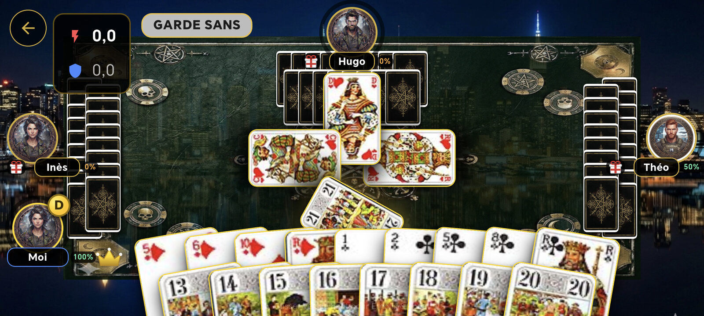

গথিক ট্যারো ২০২৬-এ টেবিলের খালি আসন পূরণ করে একটি কৃত্রিম বুদ্ধিমত্তা: সে নিলামে অংশ নেয়, ৫ জনের খেলায় রাজা ডাকে, তার তাস খেলে আর ঠিক মানুষের মতো পয়েন্ট গোনে। আপনি একা কম্পিউটারের বিরুদ্ধে ফরাসি ট্যারো খেলতে পারেন, বা খেলোয়াড় কম পড়লে টেবিল পূরণ করতে পারেন।
এই পাতা ব্যাখ্যা করে এই AI ঠিক কী করে: একটি দানে সে কী মনে রাখে, এক খেলা থেকে আরেক খেলায় আপনার সম্পর্কে কী শেখে, কেন মাঝে মাঝে ইচ্ছে করে ভুল করে, আর প্রতিযোগিতায় তার স্তর কীভাবে বদলায়।
এই কার্ড গেমের AI-কে কী শক্তিশালী করে
- শূন্য নিয়মবিরুদ্ধ চাল: সে যে তাসই খেলুক, ট্যারোর নিয়ম মেনে চলে।
- বিবেচনাপূর্ণ নিলাম: নেওয়ার আগে সে অভিজ্ঞ খেলোয়াড়ের মতো নিজের হাত যাচাই করে।
- দক্ষ ডাক আর তাস ফেলা: ৫ জনের খেলায় সে নিজের রাজা বাছে এবং নিজের পক্ষকে সাহায্য করতে ফেলার তাস প্রস্তুত করে।
- নিখুঁত স্মৃতি: সে তাস গোনে, খালি রং ধরে ফেলে আর লুকানো সঙ্গীকে খুঁজে বের করে।
- প্রতি ট্রিকে সম্ভাবনা: সে তুরুপে কাটা পড়ার ঝুঁকি আর ট্রিক জেতার সম্ভাবনা অনুমান করে।
- Petit-এ দক্ষতা: সে জানে কখন এটিকে শেষ পর্যন্ত নিয়ে যেতে হবে আর কখন বাঁচাতে হবে।
- সে আপনার খেলা শেখে: প্রত্যেক খেলোয়াড়ের দশটি অভ্যাস অনুসরণ, অবিরাম পুনর্মূল্যায়িত।
- মানুষের মতো আচরণ: ৭% বৈচিত্র্য, শুধু গুরুত্বহীন তাসে।

এমন খেলোয়াড় যে সবসময় নিয়ম মানে
প্রতিটি চালের আগে AI শুধু সেই তাসগুলোই বিবেচনা করে যা নিয়ম অনুমতি দেয়: শুরু করা রং অনুসরণ, না পারলে তুরুপ দিয়ে কাটা, প্রয়োজনে উঁচু তুরুপ দেওয়া। সে কখনো নিয়মবিরুদ্ধ তাস খেলে না, তাই তার বিরুদ্ধে খেলা ঠিক আসল টেবিলের মতোই চলে।
বিবেচনাপূর্ণ নিলাম
নেবে কি না ঠিক করতে AI অভিজ্ঞ খেলোয়াড়ের মতো তার হাত পরীক্ষা করে: তার Bouts, তুরুপের দৈর্ঘ্য আর শক্তি, তার রাজা আর রানি, তার লম্বা রং, তার খালি রং আর একক তাস। এর ভিত্তিতে সে Petite থেকে Garde contre পর্যন্ত সঠিক চুক্তি বাছে, বা পাস করে।
সে কম সুরক্ষিত Petit সম্পর্কেও সতর্ক থাকে: রক্ষা করার মতো তুরুপ খুব কম থাকলে এটি ধরা পড়তে পারে, আর সিদ্ধান্ত নেওয়ার আগে AI তা বিবেচনা করে।
অভিজ্ঞ খেলোয়াড়ের মতো রাজা ডাকা আর তাস ফেলা
৫ জনের খেলায় টেকার হওয়া AI নিজের কাছে না থাকা সবচেয়ে লম্বা রঙের রাজাকে ডাকে: সে নিজের শক্তিতে ভরসা রাখে আর অন্যদের ওই রঙে তুরুপ খেলতে বাধ্য করে। নিজেকে ডাকে কেবল শেষ উপায় হিসেবে। তাস ফেলার সময় সে এভাবে এগোয়:
- আগে থেকে প্রস্তুত খালি রং: খালি রং তৈরি করতে সে আগে তার সবচেয়ে ছোট রংগুলো ফেলে।
- দামি কিছু ফেলা হয় না: কখনো রাজা নয়, কখনো Bout নয়।
- সঙ্গী সুরক্ষিত: সে ডাকা রাজার রং কখনো খালি করে না, তাই নিজের সঙ্গীর রাজাকে তুরুপ দিয়ে কাটতে হয় না।
- শেষ উপায় হিসেবে তুরুপ: নিয়ম অনুমতি দিলে এবং অন্য কোনো উপায় না থাকলেই সে ছোট তুরুপ ফেলে।
দানের পূর্ণ স্মৃতি
প্রতি দানে AI সেসব লিখে রাখে যা একজন খুব ভালো খেলোয়াড় মনে রাখে। পরের দানের জন্য সবকিছু নতুন করে শুরু হয়।
- খেলা তাস: প্রথম ট্রিক থেকে খেলা প্রতিটি তাস। তাই সে জানে প্রতিটি রঙের কোন তাস এখনো লুকানো, আর মাস্টার তাস চিনতে পারে।
- অনুপস্থিত রং: কোনো খেলোয়াড় একটি রং অনুসরণ করতে না পারামাত্র AI লিখে রাখে যে তার ওই রং নেই, তুরুপসহ।
- তুরুপহীন খেলোয়াড়: যে খেলোয়াড় তুরুপ দিয়ে কাটার বদলে তাস ফেলে, তার আর তুরুপ নেই; কে এখনো কোনো রং কাটতে পারে তা বিচার করতে AI এটি বিবেচনা করে।
- ফেলার সংকেত: অন্য রঙের ৬ থেকে ১০ ফেলা মানে ওই রঙের জন্য ডাক হিসেবে পড়া হয়।
- টেকারের ফেলা তাস: টেকার হওয়া AI জানে সে কোন তাস ফেলেছে এবং সেগুলো হিসাব থেকে বাদ দেয়।
৫ জনের খেলায় সে লুকানো সঙ্গীকে খুঁজে বের করে: যে খেলোয়াড় টেকারের ট্রিকে পয়েন্ট ভরে সে সন্দেহভাজন হয়, যে রক্ষণভাগের ট্রিকে ভরে সে আশ্বস্ত করে, আর ডাকা রাজা দেখা দিলেই সঙ্গী নিশ্চিত হয়। রক্ষণে দ্বিতীয় ট্রিকে রাজাকে বের করে আনতে সে ডাকা রঙের সবচেয়ে ছোট তাস দিয়েও শুরু করে।
প্রতি ট্রিকে সম্ভাবনা
স্মৃতির কল্যাণে AI খেলার আগে হিসাব করে:
- তুরুপে কাটা পড়ার ঝুঁকি: যার ওই রং শেষ কিন্তু তুরুপ আছে, সে কাটবে; নইলে AI তার কাটার প্রবণতা বিবেচনা করে অনুমান করে যে তার কাছে লুকানো তাসগুলোর একটিও নেই এমন সম্ভাবনা কত।
- ট্রিক জেতার সম্ভাবনা: প্রতিটি তাসের জন্য সে অনুমান করে, এখনো খেলেনি এমন খেলোয়াড়দের বিরুদ্ধে সেটি সবচেয়ে শক্তিশালী থাকবে কি না।
রং অনুসরণ করার সময় সে নিরাপদ হলে বা ট্রিক নিশ্চিত মিত্রের কাছে গেলে তাতে পয়েন্ট ভরে। তাস ফেলার সময় সে নিজের রাজার রঙের সংকেত দেয় বা ছোট রঙের নিচু তাস দিয়ে খালি রং তৈরি করে। শুরু করার সময় সে আক্রমণ আর রক্ষণে ভিন্ন কৌশল নেয়, এবং এমন রং পছন্দ করে যা কোনো প্রতিপক্ষ কাটতে পারে না।
Petit-এ দক্ষতা
- তুরুপে ভরা হাতে: হিসাব ভালো সম্ভাবনা দিলে সে Petit-কে শেষ ট্রিকের জন্য রেখে দেয়: নিজের তুরুপকে প্রতিপক্ষের হাতে এখনো লুকানো তুরুপের সঙ্গে তুলনা করে।
- তুরুপ কম থাকলে, বা ঝুঁকি বাড়লে: কোনো নিরাপদ ট্রিকে গুঁজে দিয়ে যত দ্রুত সম্ভব সে Petit বাঁচিয়ে নেয়।
Petit (তুরুপের ১) তিনটি Bouts-এর একটি এবং শেষ ট্রিকে খেলা হলে বোনাস দেয়। AI এটিকে পদ্ধতিগতভাবে সামলায়:
এমন এক AI যা আপনার অভ্যাস শেখে
এক দান থেকে আরেক দানে AI দেখে প্রত্যেক খেলোয়াড় কীভাবে খেলে এবং তার ভূমিকা (টেকার, রক্ষণ বা সঙ্গী) অনুযায়ী সাজানো একটি প্রোফাইল তৈরি করে।
সে এই অনুসরণকে প্রত্যেক খেলোয়াড়ের সামগ্রিক প্রোফাইল দিয়ে পূর্ণ করে: কত ঘনঘন নেয়, প্রিয় চুক্তি, আক্রমণাত্মকতা, কাটার প্রবণতা, সাফল্যের হার।
একটি অভ্যাস তখনই গণ্য হয় যখন সেটি যথেষ্ট বার দেখা গেছে, আর সাম্প্রতিক ঘটনাগুলো বেশি গুরুত্ব পায়: ধরন বদলানো খেলোয়াড়কে দ্রুত পুনর্মূল্যায়ন করা হয়, আর মাত্র একটি খেলা কাউকে তকমা দিতে কখনো যথেষ্ট নয়।
AI এটি তার সিদ্ধান্তে কাজে লাগায়। প্রায়ই আগেভাগে তুরুপ টেনে বের করা আক্রমণাত্মক টেকারের বিরুদ্ধে রক্ষণভাগ তাদের মাস্টার তুরুপ ধরে রাখে; যে রক্ষক অভ্যাসবশত টেকারের ট্রিকে পয়েন্ট ভরে, শুধু সেই সূত্রের জন্য তাকে আর টেকারের সঙ্গী বলে ভুল করা হয় না।
শুধু প্রকাশ্য তথ্য: AI কেবল সবার দেখা তাসই লক্ষ করে, কখনো অন্য খেলোয়াড়ের হাত নয়। প্রোফাইল আপনার ফোনেই থাকে; টুর্নামেন্টের বিভাগের জন্য সার্ভারে পাঠানো হয় শুধু লগ-ইন করা খেলোয়াড়ের খেলা ও জেতা দানের সংখ্যা।
| লক্ষ করা অভ্যাস | AI যা লিখে রাখে |
|---|---|
| আগেভাগে তুরুপ টেনে বের করা | টেকার তার প্রথম তিনটি শুরুর মধ্যে তুরুপ দিয়ে শুরু করে |
| তুরুপ দিয়ে শুরু | একজন খেলোয়াড় কোনো রঙের বদলে তুরুপ দিয়ে শুরু করে |
| ডাকা রং দিয়ে শুরু | ৫ জনের খেলায় একজন রক্ষক প্রথম চারটি ট্রিকের মধ্যে ডাকা রাজার রং দিয়ে শুরু করে |
| টেকারকে পয়েন্ট খাওয়ানো | একজন খেলোয়াড় টেকারের জেতা ট্রিকে পয়েন্টওয়ালা তাস দেয় |
| Excuse শেষের জন্য রাখা | Excuse শেষ দুটি ট্রিকে খেলা হয় |
| Petit শেষ পর্যন্ত নিয়ে যাওয়া | Petit শেষ ট্রিকে খেলা হয় |
| স্পষ্ট সংকেত দেওয়া | ডাকের জন্য ফেলা তাসের পরে সেই রঙের রাজা আসে |
| পোয়ানিয়ে ঘোষণা | পোয়ানিয়ে থাকলে খেলোয়াড় তা ঘোষণা করে |
| দুর্বল হাতে নেওয়া | টেকার কম তুরুপ আর বড়জোর একটি Bout নিয়ে খেলে |
| চুক্তিতে ব্যর্থ হওয়া | টেকারের পক্ষ দরকারি পয়েন্টে পৌঁছায় না |
নিরপেক্ষ তাসে ৭% মানবিক উপাদান
সবসময় নিখুঁত চাল দেওয়া AI অনুমেয় এবং তার মুখোমুখি হওয়া তেমন মজার নয়। তাই তার প্রায় ৭% সিদ্ধান্তে গথিক ট্যারো AI মানুষের মতোই সেরা তাসের বদলে অন্য একটি নিচু তাস খেলে।
এই মানবিক উপাদান শুধু নিরপেক্ষ তাসে প্রযোজ্য: পয়েন্টওয়ালা তাস, তুরুপ, Petit বা Excuse-এ কখনো নয়, আর কখনো এমন চাল নয় যা ট্রিকের বিজয়ী বদলে দেবে। AI প্রতিপক্ষকে কখনো পয়েন্ট না দিয়েই খেলায় বৈচিত্র্য আনে।
টুর্নামেন্ট অনুযায়ী স্তর
টুর্নামেন্টের বাইরে AI পূর্ণ শক্তিতে খেলে, শুধু ৭% মানবিক উপাদান নিয়ে। সপ্তাহান্তের টুর্নামেন্টে বটের স্তর নির্ভর করে খেলোয়াড়ের বিভাগের ওপর, যা সার্ভার তার জয়ের হার অনুযায়ী দেয়।
| বিভাগ | নির্ধারণ | টেবিলের বটের এলোমেলো চাল |
|---|---|---|
| গ্রিন | ৪০%-এর কম দান জেতা | 30% |
| ইয়েলো | ৪০ থেকে ৫৫%-এর মধ্যে, বা ৯টির কম দান খেলা | 12% |
| রেড | ৫৫% বা তার বেশি দান জেতা | 0% |
বিভাগ ঠিক হয় শুক্রবারের বাছাইপর্ব শেষে এবং বেছে নেওয়া যায় না। নিচু স্তরের বট খেলা আর নিলাম দুটোতেই বেশি ভুল করে এবং আপনার অভ্যাসে কম মনোযোগ দেয়।
AI সম্পর্কে সাধারণ প্রশ্ন
আমি কি কম্পিউটারের বিরুদ্ধে একা ট্যারো খেলতে পারি?
হ্যাঁ। খালি আসন AI পূরণ করে: Android স্মার্টফোন বা ট্যাবলেটে একাই ৩, ৪ বা ৫ জনের পূর্ণ ট্যারো খেলা খেলতে পারেন।
AI কি আমার তাস দেখতে পায়?
না। সে শুধু নিজের হাত আর সবার দেখা তাস জানে; তার সিদ্ধান্ত আসে খেলা ট্রিক থেকে, ঠিক মানুষের মতো।
AI কি আমার স্তর অনুযায়ী বদলায়?
টুর্নামেন্টে হ্যাঁ: বটের স্তর আপনার জয়ের হার থেকে হিসাব করা বিভাগের ওপর নির্ভর করে। টুর্নামেন্টের বাইরে AI পূর্ণ শক্তিতে খেলে, প্রায় ৭% ইচ্ছাকৃত অপূর্ণ চালসহ।
আমার খেলার অভ্যাস কি ইন্টারনেটে পাঠানো হয়?
না। আপনার অভ্যাসের প্রোফাইল আপনার ডিভাইসেই থাকে। আপনার টুর্নামেন্টের বিভাগ ঠিক করতে সার্ভারে শুধু আপনার খেলা ও জেতা দানের সংখ্যা পাঠানো হয়।
Google Play-তে AI-এর বিরুদ্ধে খেলুন
শুরু করতে পড়ুন ট্যারোর সম্পূর্ণ নিয়ম বা ফিরে যান ট্যারো খেলার হোম পাতায়।